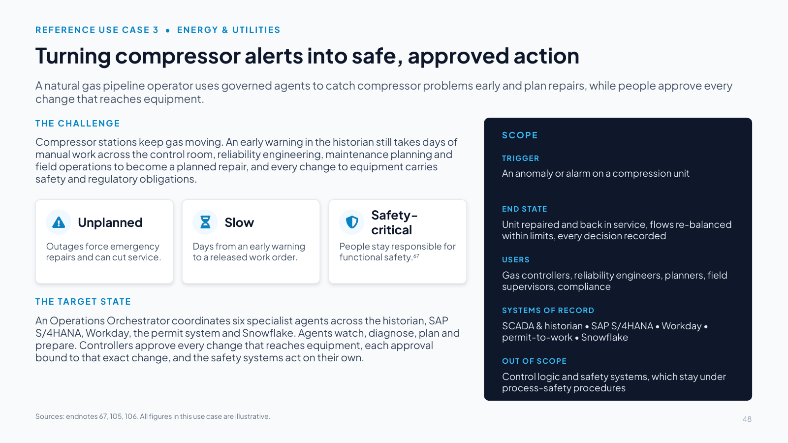
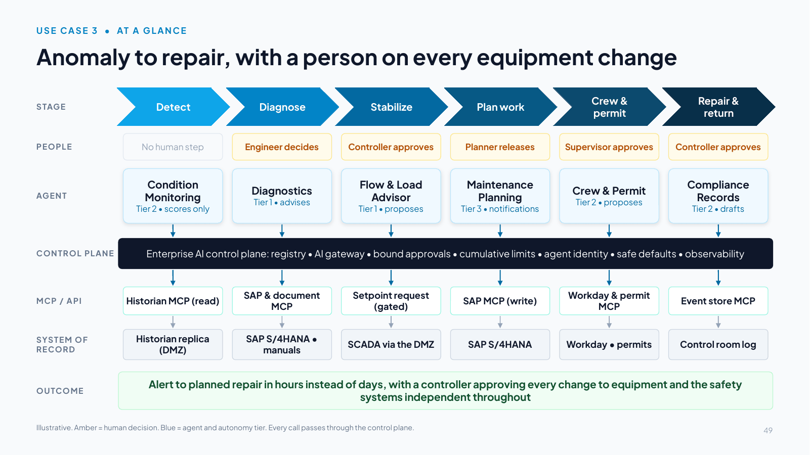
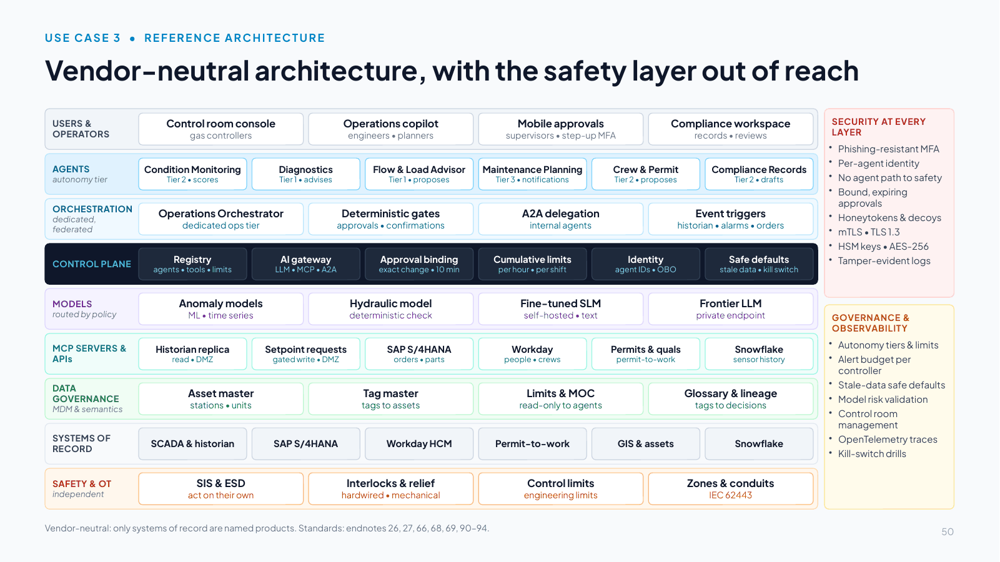
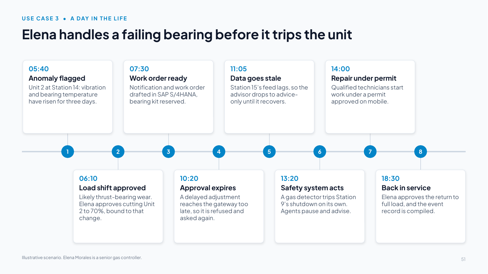
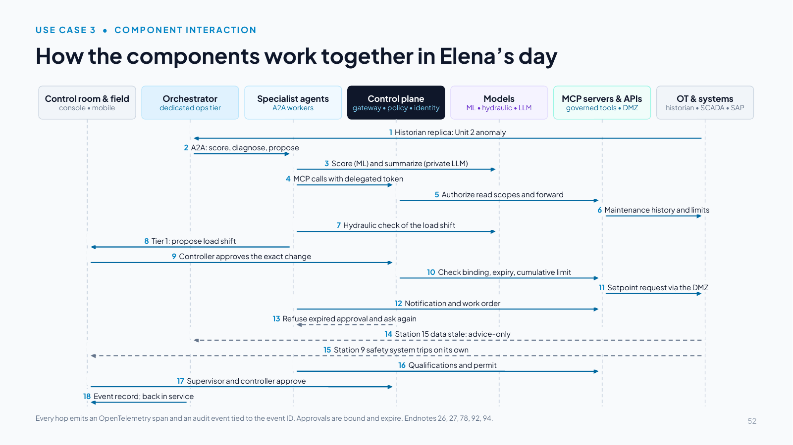
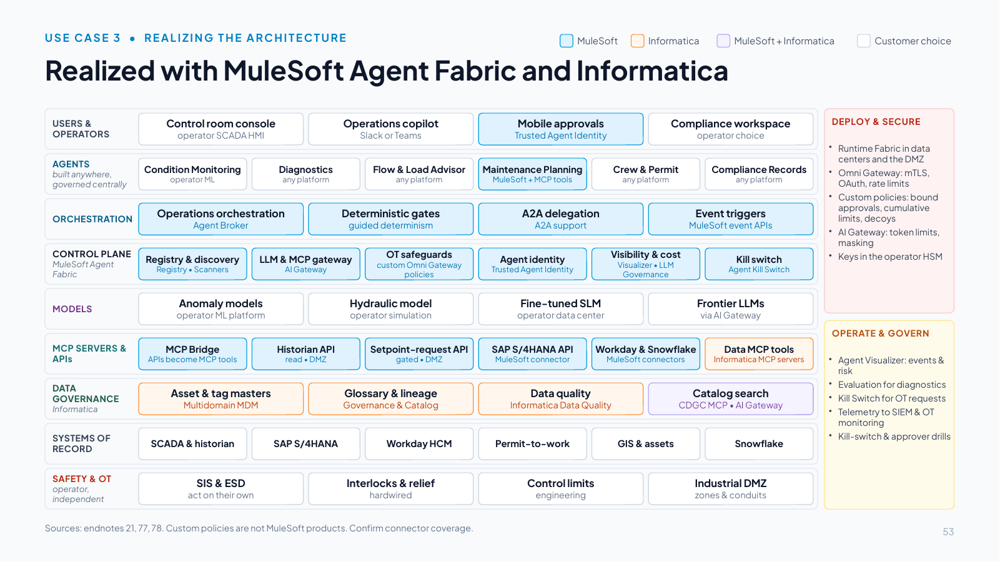
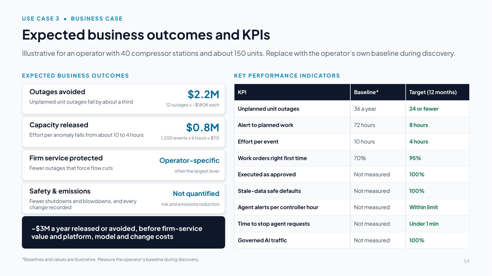
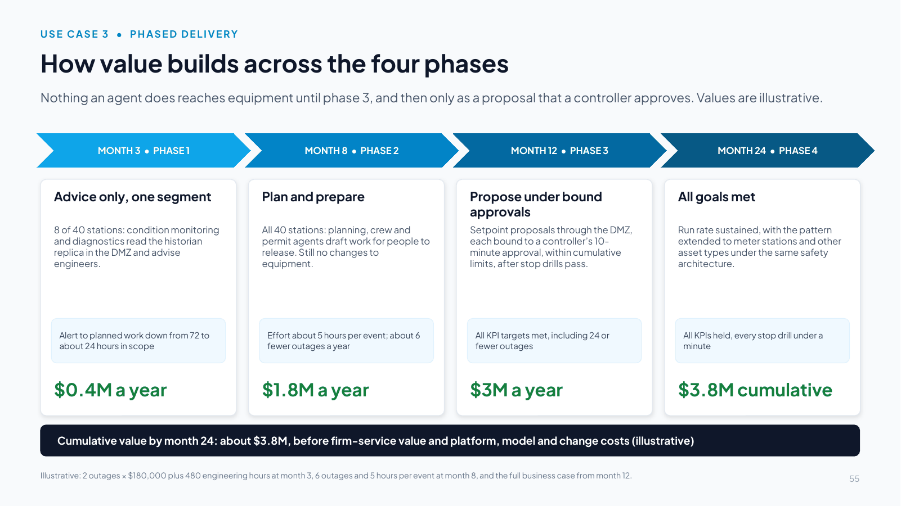
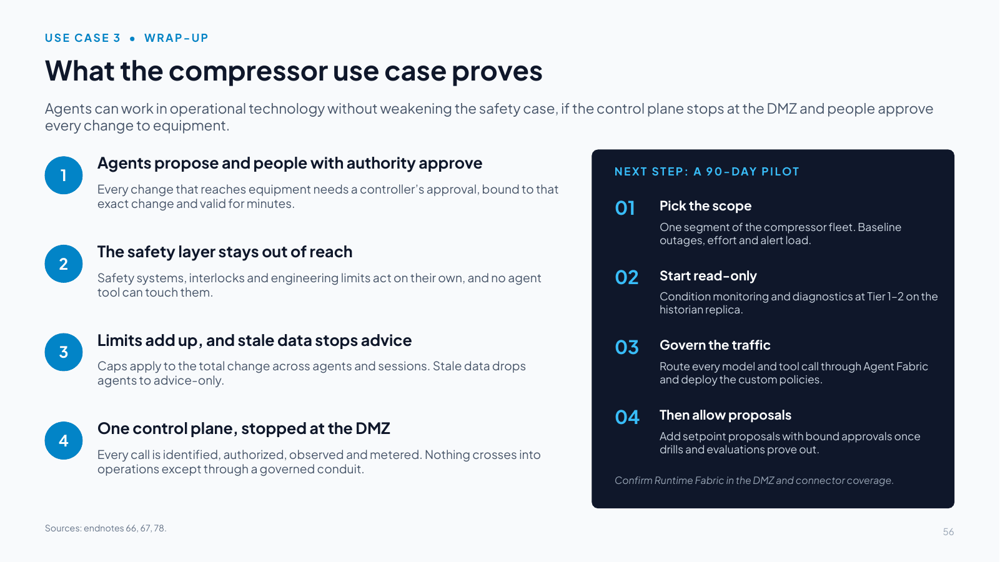

Slides 48–56
Use case 3: Energy pipeline compressor reliability
Slide 48 Turning compressor alerts into safe, approved action

Slide text
A natural gas pipeline operator uses governed agents to catch compressor problems early and plan repairs, while people approve every change that reaches equipment.
THE CHALLENGE
Compressor stations keep gas moving. An early warning in the historian still takes days of manual work across the control room, reliability engineering, maintenance planning and field operations to become a planned repair, and every change to equipment carries safety and regulatory obligations.
Unplanned
Outages force emergency repairs and can cut service.
Slow
Days from an early warning to a released work order.
Safety-critical
People stay responsible for functional safety.67
THE TARGET STATE
An Operations Orchestrator coordinates six specialist agents across the historian, SAP S/4HANA, Workday, the permit system and Snowflake. Agents watch, diagnose, plan and prepare. Controllers approve every change that reaches equipment, each approval bound to that exact change, and the safety systems act on their own.
SCOPE
TRIGGER
An anomaly or alarm on a compression unit
END STATE
Unit repaired and back in service, flows re-balanced within limits, every decision recorded
USERS
Gas controllers, reliability engineers, planners, field supervisors, compliance
SYSTEMS OF RECORD
SCADA & historian • SAP S/4HANA • Workday • permit-to-work • Snowflake
OUT OF SCOPE
Control logic and safety systems, which stay under process-safety procedures
Sources: endnotes 67, 105, 106. All figures in this use case are illustrative.
Speaker notes
Talk track (two minutes): The third reference use case takes the control plane into operational technology, where an agent's action can reach physical equipment. It is written for a natural gas transmission operator and carries over to power utilities and to upstream and downstream oil and gas. As before, the architecture is vendor-neutral except for the transactional systems (SAP S/4HANA, Workday and Snowflake). Control systems, historians and safety systems are described generically.
The problem: most operators already stream vibration, temperature and pressure data to a historian, but turning an early warning into a planned repair still takes days of manual work, and unplanned outages force emergency repairs and can cut service. The work also sits under specific rules. Gas controllers need defined authority, adequate information, fatigue limits and managed alarm loads under the control room management rule [105]. Critical pipeline operators must segment OT from IT networks, control access and monitor continuously under TSA's security directive [106]. Current guidance also holds that people remain responsible for functional safety and that AI should not actively control OT without a human in the loop [67].
The target state: an Operations Orchestrator coordinates Condition Monitoring, Diagnostics, Flow & Load Advisor, Maintenance Planning, Crew & Permit and Compliance Records agents. The agents propose, and controllers approve every change that reaches equipment, with each approval bound to that exact change and valid for minutes. The independent safety systems act on their own.
All figures in this use case are illustrative. Replace them with the operator's own baseline during discovery. The companion handbook (Section 13) has the full detail.
Slide 49 Anomaly to repair, with a person on every equipment change

Slide text
STAGE
PEOPLE
AGENT
CONTROL PLANE
MCP / API
SYSTEM OF RECORD
OUTCOME
Detect
No human step
Condition Monitoring
Tier 2 • scores only
Historian MCP (read)
Historian replica (DMZ)
Diagnose
Engineer decides
Diagnostics
Tier 1 • advises
SAP & document MCP
SAP S/4HANA • manuals
Stabilize
Controller approves
Flow & Load Advisor
Tier 1 • proposes
Setpoint request (gated)
SCADA via the DMZ
Plan work
Planner releases
Maintenance Planning
Tier 3 • notifications
SAP MCP (write)
SAP S/4HANA
Crew &
permit
Supervisor approves
Crew & Permit
Tier 2 • proposes
Workday & permit MCP
Workday • permits
Repair &
return
Controller approves
Compliance Records
Tier 2 • drafts
Event store MCP
Control room log
Enterprise AI control plane: registry • AI gateway • bound approvals • cumulative limits • agent identity • safe defaults • observability
Alert to planned repair in hours instead of days, with a controller approving every change to equipment and the safety systems independent throughout
Illustrative. Amber = human decision. Blue = agent and autonomy tier. Every call passes through the control plane.
Speaker notes
Walk the six stages left to right. For each, point to the human step (amber), the agent and its autonomy tier (blue), and the governed path underneath: agents reach systems only through the control plane and a governed MCP tool or API, and nothing reaches the control system except through the DMZ.
- Detect: the Condition Monitoring agent scores vibration, temperature and pressure trends from the historian replica (read-only, Tier 2).
- Diagnose: the Diagnostics agent suggests likely causes from maintenance history, similar events and manufacturer guidance. The reliability engineer decides (Tier 1).
- Stabilize: the Flow & Load Advisor proposes a load shift checked by the hydraulic model. The controller approves at the console, and the approval is bound to that exact change and valid for ten minutes (Tier 1).
- Plan work: the Maintenance Planning agent creates the notification, drafts the work order and reserves parts in SAP S/4HANA. The planner releases it.
- Crew & permit: the Crew & Permit agent confirms qualifications for the covered tasks [107] and drafts the isolation permit. The field supervisor approves on mobile.
- Repair & return: the controller approves the return to full load. The Compliance Records agent assembles the event record.
The outcome to land: alert to planned repair in hours instead of days (illustrative), with a controller approving every change to equipment and the safety systems independent throughout.
Slide 50 Vendor-neutral architecture, with the safety layer out of reach

Slide text
USERS & OPERATORS
Control room console
gas controllers
Operations copilot
engineers • planners
Mobile approvals
supervisors • step-up MFA
Compliance workspace
records • reviews
AGENTS
autonomy tier
Condition Monitoring
Tier 2 • scores
Diagnostics
Tier 1 • advises
Flow & Load Advisor
Tier 1 • proposes
Maintenance Planning
Tier 3 • notifications
Crew & Permit
Tier 2 • proposes
Compliance Records
Tier 2 • drafts
ORCHESTRATION
dedicated, federated
Operations Orchestrator
dedicated ops tier
Deterministic gates
approvals • confirmations
A2A delegation
internal agents
Event triggers
historian • alarms • orders
CONTROL PLANE
Registry
agents • tools • limits
AI gateway
LLM • MCP • A2A
Approval binding
exact change • 10 min
Cumulative limits
per hour • per shift
Identity
agent IDs • OBO
Safe defaults
stale data • kill switch
MODELS
routed by policy
Anomaly models
ML • time series
Hydraulic model
deterministic check
Fine-tuned SLM
self-hosted • text
Frontier LLM
private endpoint
MCP SERVERS & APIs
Historian replica
read • DMZ
Setpoint requests
gated write • DMZ
SAP S/4HANA
orders • parts
Workday
people • crews
Permits & quals
permit-to-work
Snowflake
sensor history
DATA GOVERNANCE
MDM & semantics
Asset master
stations • units
Tag master
tags to assets
Limits & MOC
read-only to agents
Glossary & lineage
tags to decisions
SYSTEMS OF RECORD
SCADA & historian
SAP S/4HANA
Workday HCM
Permit-to-work
GIS & assets
Snowflake
SAFETY & OT
independent
SIS & ESD
act on their own
Interlocks & relief
hardwired • mechanical
Control limits
engineering limits
Zones & conduits
IEC 62443
SECURITY AT EVERY LAYER
Phishing-resistant MFA
Per-agent identity
No agent path to safety
Bound, expiring approvals
Honeytokens & decoys
mTLS • TLS 1.3
HSM keys • AES-256
Tamper-evident logs
GOVERNANCE & OBSERVABILITY
Autonomy tiers & limits
Alert budget per controller
Stale-data safe defaults
Model risk validation
Control room management
OpenTelemetry traces
Kill-switch drills
Vendor-neutral: only systems of record are named products. Standards: endnotes 26, 27, 66, 68, 69, 90–94.
Speaker notes
This is the vendor-neutral solution architecture, aligned to the north-star reference architecture, with one addition: a safety and OT layer beneath the systems of record that the agents cannot reach. Only the systems of record are named products.
Orchestration model selected: a dedicated orchestration tier for operations, federated under the enterprise control plane. Operations data and agents stay in the operator's own environment, close to the historian, while identity, policy, registry, audit and cost remain centrally governed. Orchestration is event-driven, with a supervisor pattern over A2A [27] and deterministic workflows for anything that touches equipment: a setpoint request always needs a controller's approval, and larger changes need a supervisor's confirmation.
Models and routing: anomaly models are conventional machine learning on time series. The operator's hydraulic model checks every proposed load shift deterministically and has the final word. A self-hosted small language model reads and drafts text, and a frontier model on a private endpoint summarizes diagnostics. Advice that rests on data that has since gone stale is discarded.
Control plane and policy: each approval is bound to the exact change and valid for ten minutes by the gateway's clock, with a supervisor as separate attester above a threshold. Cumulative caps limit flow re-allocation per hour and per shift across agents and sessions. Stale data (a feed more than 60 seconds old) drops the advisor to advice-only and voids pending requests, and alert budgets keep agent notifications within alarm-management limits. The binding and cumulative limits are custom Omni Gateway policies [78].
Security at every level: the design applies zero trust [90], with zones and conduits following ISA/IEC 62443 and NIST's OT security guide [68][69]. The only write path into operations is a setpoint-request service in the DMZ. Safety instrumented systems, emergency shutdown and interlocks stay independent of the agent path [66], and honeytokens and decoy tools in the DMZ flag any agent outside the governed path.
Slide 51 Elena handles a failing bearing before it trips the unit

Slide text
1. 05:40
Anomaly flagged
Unit 2 at Station 14: vibration and bearing temperature have risen for three days.
2. 06:10
Load shift approved
Likely thrust-bearing wear. Elena approves cutting Unit 2 to 70%, bound to that change.
3. 07:30
Work order ready
Notification and work order drafted in SAP S/4HANA, bearing kit reserved.
4. 10:20
Approval expires
A delayed adjustment reaches the gateway too late, so it is refused and asked again.
5. 11:05
Data goes stale
Station 15’s feed lags, so the advisor drops to advice-only until it recovers.
6. 13:20
Safety system acts
A gas detector trips Station 9’s shutdown on its own. Agents pause and advise.
7. 14:00
Repair under permit
Qualified technicians start work under a permit approved on mobile.
8. 18:30
Back in service
Elena approves the return to full load, and the event record is compiled.
Illustrative scenario. Elena Morales is a senior gas controller.
Speaker notes
Tell Elena's day as a story.
At 05:40 the condition-monitoring agent flags Unit 2 at Station 14: vibration and bearing temperature have been rising for three days. By 06:00 the diagnostics agent has matched the pattern to two earlier thrust-bearing failures on the same model of unit and recommends an inspection within 24 hours at reduced load. At 06:10 the flow advisor proposes cutting Unit 2 to 70% and picking up the flow at Stations 13 and 15. The hydraulic model shows deliveries and pressures stay within limits. Elena approves at her console, next to the SCADA displays, and the change executes within its ten-minute window.
At 07:30 the planning agent has drafted the work order in SAP S/4HANA with the bearing kit reserved, and the planner releases it at 08:15. At 10:20 a second adjustment waits too long in the queue while Elena takes a shipper's call. Its approval has expired by the time it reaches the gateway, so it is refused and the advisor asks again with fresh values. When Station 15's data feed falls more than a minute behind at 11:05, the advisor drops to advice-only and voids a pending request until the feed recovers nine minutes later. At 13:20 a gas detector trips Station 9's emergency shutdown. The safety system acts on its own, and the agents pause requests for that segment and offer a re-balancing plan as advice. Qualified technicians start the repair at 14:00 under a permit their supervisor approved on mobile, and at 18:30 Elena approves the return to full load.
Leave the audience with this: people stayed in charge of every change to equipment, the safety systems never depended on the agents, and the repair happened in a planned window instead of after a trip.
Slide 52 How the components work together in Elena’s day

Slide text
Control room & field
console • mobile
Orchestrator
dedicated ops tier
Specialist agents
A2A workers
Control plane
gateway • policy • identity
Models
ML • hydraulic • LLM
MCP servers & APIs
governed tools • DMZ
OT & systems
historian • SCADA • SAP
1 Historian replica: Unit 2 anomaly
2 A2A: score, diagnose, propose
3 Score (ML) and summarize (private LLM)
4 MCP calls with delegated token
5 Authorize read scopes and forward
6 Maintenance history and limits
7 Hydraulic check of the load shift
8 Tier 1: propose load shift
9 Controller approves the exact change
10 Check binding, expiry, cumulative limit
11 Setpoint request via the DMZ
12 Notification and work order
13 Refuse expired approval and ask again
14 Station 15 data stale: advice-only
15 Station 9 safety system trips on its own
16 Qualifications and permit
17 Supervisor and controller approve
18 Event record; back in service
Every hop emits an OpenTelemetry span and an audit event tied to the event ID. Approvals are bound and expire. Endnotes 26, 27, 78, 92, 94.
Speaker notes
Read the numbered steps top to bottom. They follow Elena's day.
Steps 1–6 (05:40–06:00): the historian replica in the DMZ raises the anomaly, and the orchestrator delegates scoring and diagnosis over A2A [27]. The anomaly model scores Unit 2. The diagnostics agent reads maintenance history and engineering limits through MCP tools with a delegated token [92] and read-only scopes [26], and a private frontier model summarizes manufacturer guidance for the engineer.
Steps 7–11 (06:10): the Flow & Load Advisor runs the hydraulic check and proposes the load shift (Tier 1). Elena approves the exact change at the console. The control plane checks the binding, the ten-minute validity and the cumulative limit (custom Omni Gateway policies [78]). Only then does the setpoint-request service in the DMZ pass the change to the control system, which enforces its own engineering limits.
Step 12 (07:30): the planning agent creates the notification and work order through SAP S/4HANA tools.
Steps 13–15 (10:20–13:20): a delayed request is refused because its approval expired, and stale data from Station 15 drops the advisor to advice-only. When Station 9's safety system trips on its own, the agents only pause and advise.
Steps 16–18 (14:00–18:30): the crew agent confirms qualifications and drafts the permit, the supervisor and Elena approve, and the records agent compiles the event record. Every hop emits an OpenTelemetry span and an audit event [94].
Slide 53 Realized with MuleSoft Agent Fabric and Informatica

Slide text
MuleSoft
Informatica
MuleSoft + Informatica
Customer choice
USERS & OPERATORS
Control room console
operator SCADA HMI
Operations copilot
Slack or Teams
Mobile approvals
Trusted Agent Identity
Compliance workspace
operator choice
AGENTS
built anywhere, governed centrally
Condition Monitoring
operator ML
Diagnostics
any platform
Flow & Load Advisor
any platform
Maintenance Planning
MuleSoft + MCP tools
Crew & Permit
any platform
Compliance Records
any platform
ORCHESTRATION
Operations orchestration
Agent Broker
Deterministic gates
guided determinism
A2A delegation
A2A support
Event triggers
MuleSoft event APIs
CONTROL PLANE
MuleSoft Agent Fabric
Registry & discovery
Registry • Scanners
LLM & MCP gateway
AI Gateway
OT safeguards
custom Omni Gateway policies
Agent identity
Trusted Agent Identity
Visibility & cost
Visualizer • LLM Governance
Kill switch
Agent Kill Switch
MODELS
Anomaly models
operator ML platform
Hydraulic model
operator simulation
Fine-tuned SLM
operator data center
Frontier LLMs
via AI Gateway
MCP SERVERS & APIs
MCP Bridge
APIs become MCP tools
Historian API
read • DMZ
Setpoint-request API
gated • DMZ
SAP S/4HANA API
MuleSoft connector
Workday & Snowflake
MuleSoft connectors
Data MCP tools
Informatica MCP servers
DATA GOVERNANCE
Informatica
Asset & tag masters
Multidomain MDM
Glossary & lineage
Governance & Catalog
Data quality
Informatica Data Quality
Catalog search
CDGC MCP • AI Gateway
SYSTEMS OF RECORD
SCADA & historian
SAP S/4HANA
Workday HCM
Permit-to-work
GIS & assets
Snowflake
SAFETY & OT
operator, independent
SIS & ESD
act on their own
Interlocks & relief
hardwired
Control limits
engineering
Industrial DMZ
zones & conduits
DEPLOY & SECURE
Runtime Fabric in data centers and the DMZ
Omni Gateway: mTLS, OAuth, rate limits
Custom policies: bound approvals, cumulative limits, decoys
AI Gateway: token limits, masking
Keys in the operator HSM
OPERATE & GOVERN
Agent Visualizer: events & risk
Evaluation for diagnostics
Kill Switch for OT requests
Telemetry to SIEM & OT monitoring
Kill-switch & approver drills
Sources: endnotes 21, 77, 78. Custom policies are not MuleSoft products. Confirm connector coverage.
Speaker notes
How MuleSoft Agent Fabric, custom Omni Gateway policies and Informatica realize the vendor-neutral design. Colors show which vendor fills each role. Grey boxes remain the operator's choice, including the control systems, historian, safety systems and models.
- Registry and discovery: Agent Registry and Agent Scanners register operations agents and agents embedded in vendor platforms, with owners, tiers and limits [21].
- Orchestration: Agent Broker with guided determinism enforces the fixed gates: no setpoint request without a controller's approval, no large change without a supervisor [21].
- Gateway: AI Gateway is the single policy point for LLM and MCP traffic. Omni Gateway applies mTLS, OAuth and rate limits to APIs and A2A [21][78].
- OT safeguards come from custom Omni Gateway policies built with the Policy Development Kit. Approval-to-Execution Binding checks that each setpoint request matches its approval and validity window, Cross-Session Aggregate-Risk Gate caps cumulative change across agents and sessions, and decoy and honeytoken policies flag agents outside the governed path [78]. They are custom code, supported by the operator or its partner, not MuleSoft products.
- Identity and control: Trusted Agent Identity supports on-behalf-of actions with mobile approval for permits and the return to service [21]. Agent Kill Switch stops all agent-originated OT requests in one action [21], and diagnostics and drafts are tested before release with the operator's evaluation tool.
- Tools: MCP Bridge and connectors for SAP S/4HANA, Workday and Snowflake. System APIs for the historian replica and permit-to-work (confirm connector coverage) [21].
- Data foundation (Informatica): Multidomain MDM holds asset, functional-location and tag golden records that agents reach through governed APIs, and data quality rules validate tag mappings and asset records, with exceptions routed to data stewards. Agents find data assets through the CDGC Metadata Search MCP server [77].
- Deployment: Runtime Fabric runs gateways, MCP servers and agents in the operator's data centers and industrial DMZ [21].
Slide 54 Expected business outcomes and KPIs

Slide text
Illustrative for an operator with 40 compressor stations and about 150 units. Replace with the operator’s own baseline during discovery.
EXPECTED BUSINESS OUTCOMES
Outages avoided
Unplanned unit outages fall by about a third
$2.2M
12 outages × ~$180K each
Capacity released
Effort per anomaly falls from about 10 to 4 hours
$0.8M
1,200 events × 6 hours × $115
Firm service protected
Fewer outages that force flow cuts
Operator-specific
often the largest lever
Safety & emissions
Fewer shutdowns and blowdowns, and every change recorded
Not quantified
risk and emissions reduction
~$3M a year released or avoided, before firm-service value and platform, model and change costs
KEY PERFORMANCE INDICATORS
| KPI | Baseline* | Target (12 months) |
|---|---|---|
| Unplanned unit outages | 36 a year | 24 or fewer |
| Alert to planned work | 72 hours | 8 hours |
| Effort per event | 10 hours | 4 hours |
| Work orders right first time | 70% | 95% |
| Executed as approved | Not measured | 100% |
| Stale-data safe defaults | Not measured | 100% |
| Agent alerts per controller hour | Not measured | Within limit |
| Time to stop agent requests | Not measured | Under 1 min |
| Governed AI traffic | Not measured | 100% |
*Baselines and values are illustrative. Measure the operator’s baseline during discovery.
Speaker notes
Business case, illustrative for an operator with 40 compressor stations and about 150 units, about 1,200 anomaly events and 36 unplanned unit outages a year:
- Outages avoided: earlier detection and planned repairs cut unplanned outages by about a third. 12 fewer outages × about $180,000 each (emergency repair premium, overtime and lost interruptible revenue) is about $2.2M a year.
- Capacity released: agents assemble diagnoses, work packages and permits, so effort per event falls from about 10 to 4 hours. 1,200 events × 6 hours × $115 is about $0.8M.
- Firm service protected: fewer outages that force flow cuts. The value is operator-specific and often the largest lever where outages constrain firm transportation.
- Safety and emissions: fewer emergency shutdowns and station blowdowns, and every change to equipment approved and recorded. Not quantified here; use the operator's own emissions factors.
Roughly $3M a year before firm-service value and before platform, model and change costs, which should be estimated alongside the baseline.
KPIs: the baselines are illustrative. The KPIs that speak directly to oversight and safety are setpoint requests executed exactly as approved and within their validity window (target 100%), stale-data events handled by the safe default (100%), agent alerts per controller hour within the alarm-management limit, and time to stop all agent-originated requests to OT in drills (under a minute).
Slide 55 How value builds across the four phases

Slide text
Nothing an agent does reaches equipment until phase 3, and then only as a proposal that a controller approves. Values are illustrative.
MONTH 3 • PHASE 1
Advice only, one segment
8 of 40 stations: condition monitoring and diagnostics read the historian replica in the DMZ and advise engineers.
Alert to planned work down from 72 to about 24 hours in scope
$0.4M a year
MONTH 8 • PHASE 2
Plan and prepare
All 40 stations: planning, crew and permit agents draft work for people to release. Still no changes to equipment.
Effort about 5 hours per event; about 6 fewer outages a year
$1.8M a year
MONTH 12 • PHASE 3
Propose under bound approvals
Setpoint proposals through the DMZ, each bound to a controller’s 10-minute approval, within cumulative limits, after stop drills pass.
All KPI targets met, including 24 or fewer outages
$3M a year
MONTH 24 • PHASE 4
All goals met
Run rate sustained, with the pattern extended to meter stations and other asset types under the same safety architecture.
All KPIs held, every stop drill under a minute
$3.8M cumulative
Cumulative value by month 24: about $3.8M, before firm-service value and platform, model and change costs (illustrative)
Illustrative: 2 outages × $180,000 plus 480 engineering hours at month 3, 6 outages and 5 hours per event at month 8, and the full business case from month 12.
Speaker notes
Phased delivery for the compressor use case, aligned with the four phases of the plan. Nothing an agent does reaches equipment until phase 3, and then only as a proposal that a controller approves.
- Month 3 (phase 1): one segment of the fleet, 8 of 40 stations. Condition monitoring and diagnostics agents read the historian replica in the DMZ and advise engineers at tiers 1–2. No agent tool can reach control or safety systems. About two outages a year are caught early (2 × $180,000) and engineering effort falls in scope (480 hours × $115): about $0.4M a year.
- Month 8 (phase 2): all 40 stations. Maintenance planning and crew and permit agents draft notifications, work orders and permits for planners and supervisors to release. About six fewer unplanned outages a year ($1.08M) and 5 hours of effort per event (1,200 × 5 × $115, about $0.69M): about $1.8M a year.
- Month 12 (phase 3): the flow and load advisor proposes setpoint changes through the DMZ. Each executes only with the controller's approval, bound to that exact change and valid for ten minutes, within cumulative limits and stale-data safe defaults, and only after drills show that people can stop agent requests in under a minute. All KPI targets are met: about $3M a year.
- Month 24 (phase 4): run rate sustained and the pattern extended to meter stations and other asset types. Cumulative value reaches about $3.8M by month 24.
All values are illustrative and before platform, model and change costs. Firm service protected, often the largest lever, is operator-specific and not included.
Slide 56 What the compressor use case proves

Slide text
Agents can work in operational technology without weakening the safety case, if the control plane stops at the DMZ and people approve every change to equipment.
1. Agents propose and people with authority approve
Every change that reaches equipment needs a controller’s approval, bound to that exact change and valid for minutes.
2. The safety layer stays out of reach
Safety systems, interlocks and engineering limits act on their own, and no agent tool can touch them.
3. Limits add up, and stale data stops advice
Caps apply to the total change across agents and sessions. Stale data drops agents to advice-only.
4. One control plane, stopped at the DMZ
Every call is identified, authorized, observed and metered. Nothing crosses into operations except through a governed conduit.
NEXT STEP: A 90-DAY PILOT
01. Pick the scope
One segment of the compressor fleet. Baseline outages, effort and alert load.
02. Start read-only
Condition monitoring and diagnostics at Tier 1–2 on the historian replica.
03. Govern the traffic
Route every model and tool call through Agent Fabric and deploy the custom policies.
04. Then allow proposals
Add setpoint proposals with bound approvals once drills and evaluations prove out.
Confirm Runtime Fabric in the DMZ and connector coverage.
Speaker notes
Wrap up with what this use case proves:
- People with authority approve what agents propose. Every change that reaches equipment needs a controller's approval, bound to that exact change and valid for minutes, and larger changes need a supervisor as a separate attester.
- The safety layer stays out of reach. Safety instrumented systems, emergency shutdown, interlocks and engineering limits act on their own. No agent tool can read or write safety logic, bypass an interlock or acknowledge a safety alarm [66][67].
- Limits add up, and stale data stops advice. Cumulative caps apply across agents and sessions, and a stale feed drops agents to advice-only. The process falls back to its engineered safe state, not a blanket stop.
- One control plane, stopped at the DMZ. Every call is identified, authorized, observed and metered, and nothing crosses into operations except through a governed conduit.
Proposed next step: a 90-day pilot. Scope one segment of the compressor fleet and baseline outages, effort and alert load. Start read-only with condition monitoring and diagnostics at Tier 1–2 on the historian replica. Route every model and tool call through Agent Fabric and deploy the custom Omni Gateway policies [78]. Add setpoint proposals with bound approvals only once kill-switch and approver drills and evaluations prove out.
Before committing dates, confirm Runtime Fabric deployment in the DMZ and connector coverage for the historian and permit systems.